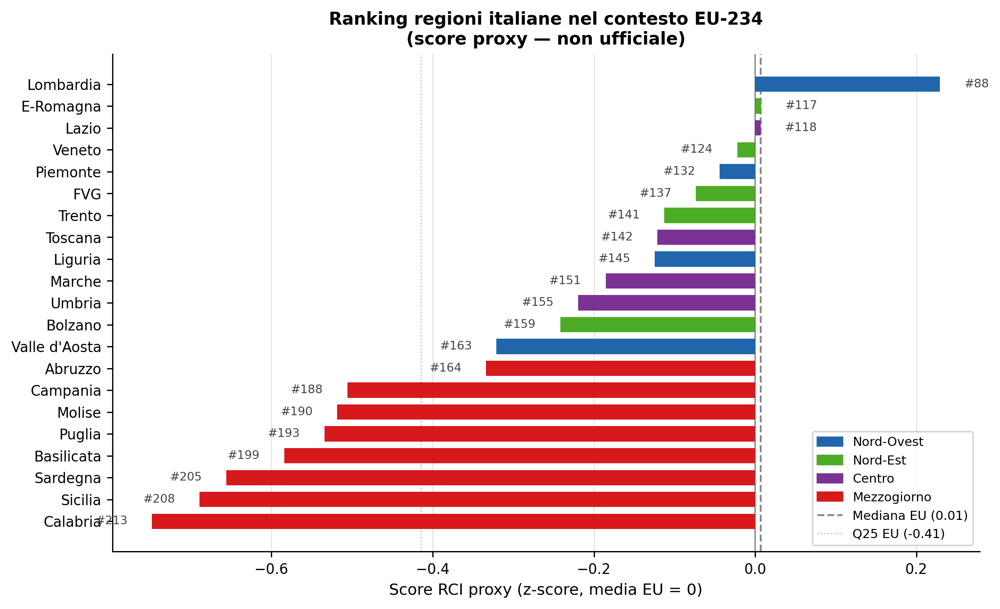
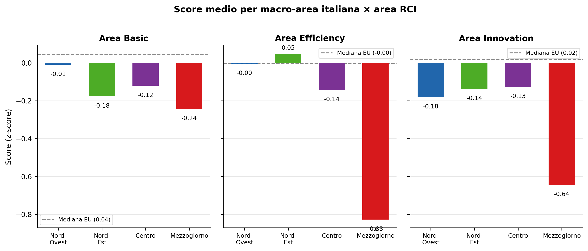
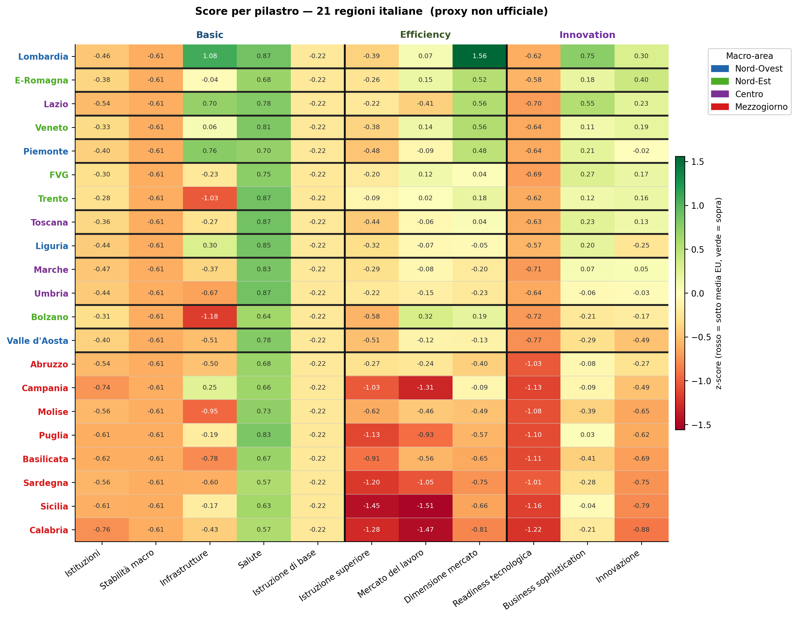
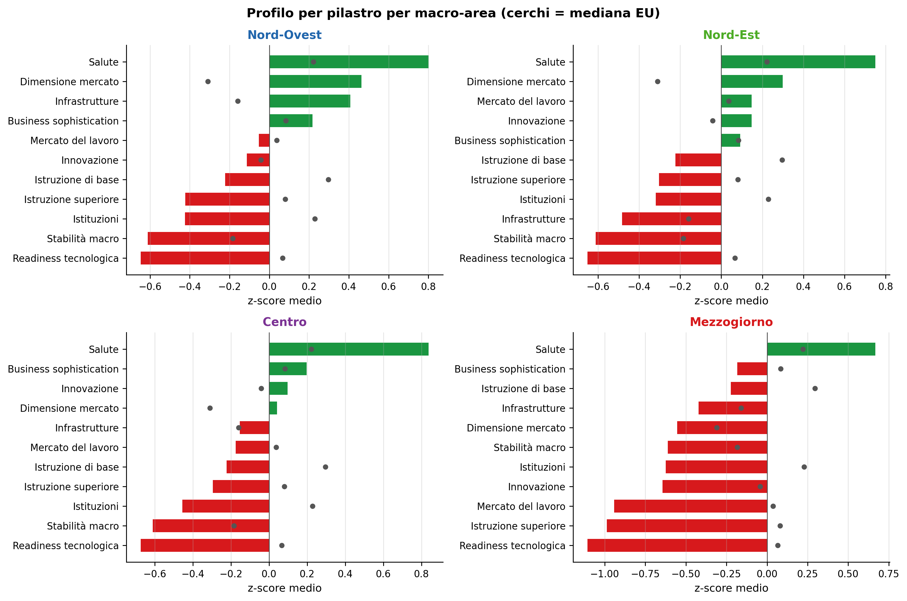
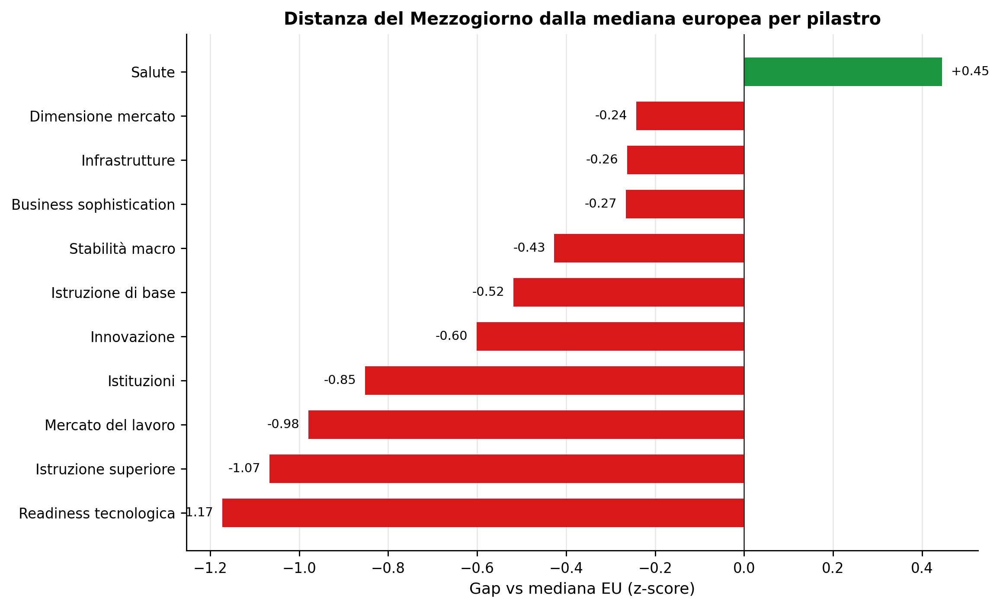
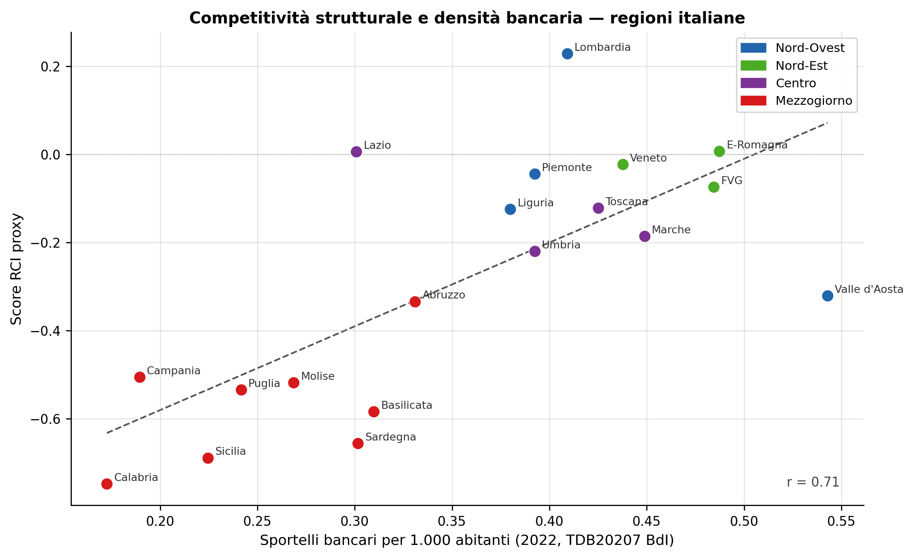
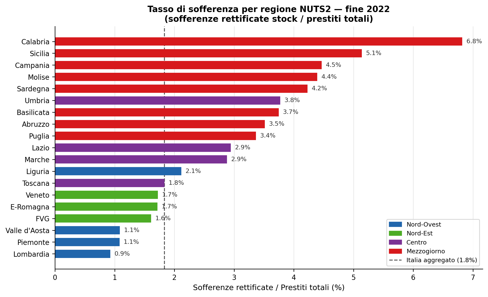
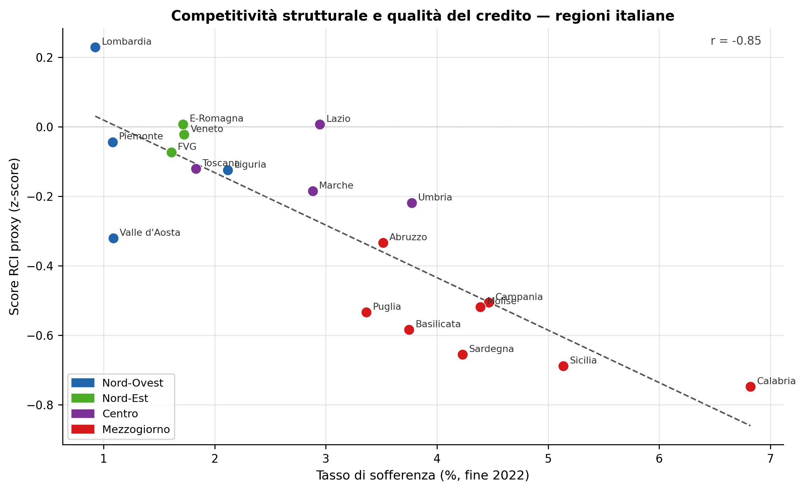

Competitività regionale e capacità di assorbimento
Le regioni italiane nell’EU RCI 2.0 (2022): baseline strutturale per l’incrocio con credito, ZES e PNRR
Paolo Volterra ![]()
Credito, incentivi e investimenti pubblici non producono gli stessi risultati in tutti i territori: la capacità di trasformarli in sviluppo dipende dalle condizioni strutturali di partenza. L’EU Regional Competitiveness Index 2.0 (edizione 2022) misura questa capacità lungo tre assi — Basic, Efficiency, Innovation — attraverso 11 pilastri e 68 indicatori per 234 regioni NUTS2 europee. Il documento analizza la posizione delle 21 regioni italiane nel contesto EU, scompone il divario territoriale per pilastro e macro-area, e incrocia i punteggi strutturali con due indicatori bancari: la densità sportellare (TDB20207) e il tasso di sofferenza (TRI30265/TFR10241). Il Mezzogiorno mostra un deficit sistemico che non riguarda un singolo fattore ma l’intero ecosistema competitivo; il tasso di sofferenza, più direttamente collegato alla qualità del credito, ne riflette la struttura in modo coerente. L’analisi costituisce la baseline 2022: la prossima edizione triennale del RCI consentirà di verificare se PNRR, Superbonus, ZES Unica e transizione digitale abbiano modificato la geografia della competitività o abbiano solo prodotto uno shock temporaneo di spesa.
RCI, competitività regionale, Mezzogiorno, NUTS2, Banca d’Italia, divario territoriale
1 Il RCI 2.0: struttura e approccio metodologico
L’EU Regional Competitiveness Index 2.0 misura la competitività di 234 regioni NUTS2 dell’Unione europea attraverso 11 pilastri raggruppati in tre aree:
| Area | Pilastri |
|---|---|
| Basic | Istituzioni, Stabilità macroeconomica, Infrastrutture, Salute, Istruzione di base |
| Efficiency | Istruzione superiore, Mercato del lavoro, Dimensione mercato |
| Innovation | Readiness tecnologica, Business sophistication, Innovazione |
L’indice è costruito su 68 indicatori riferiti a diverse annualità (prevalentemente 2019–2022). Cattura i fattori strutturali di lungo periodo — non gli shock congiunturali. L’ultima edizione disponibile è la RCI 2.0 – 2022, pubblicata a marzo 2023 e rivista a maggio 2023 (Dijkstra et al., 2023).
2 Posizione delle regioni italiane nel contesto europeo

Solo la Lombardia supera stabilmente la mediana europea (RCI ufficiale 103,2, rank 98 su 234; rank proxy 88). Emilia-Romagna e Lazio si collocano esattamente a ridosso della mediana — nella proxy l’Emilia-Romagna la supera per pochi millesimi — mentre nel ranking ufficiale restano sotto (rank 130 e 136). Le altre regioni del Centro-Nord occupano il terzo quartile EU; le regioni del Mezzogiorno, con la sola eccezione dell’Abruzzo, si concentrano nel quartile inferiore, con Campania, Sicilia e Calabria tra le posizioni più basse del ranking europeo.
3 Struttura del divario: analisi per area

Il Mezzogiorno registra deficit in tutte e tre le aree, ma il gap più ampio rispetto alla mediana EU è nell’area Efficiency (−0,82): mercato del lavoro, istruzione superiore, dimensione del mercato. Segue l’area Innovation (−0,66: capacità tecnologica, R&S, sofisticazione imprenditoriale). Il distacco nell’area Basic è più contenuto (−0,29), perché il deficit su istituzioni e istruzione di base è in parte compensato dal pilastro salute, in cui le regioni meridionali superano la mediana europea.
4 Decomposizione per pilastro

La heatmap evidenzia alcune strutture ricorrenti:
- Istituzioni: il Mezzogiorno mostra i punteggi peggiori d’Italia, con Campania e Calabria al di sotto del quartile inferiore EU. Il differenziale è ampio rispetto al Nord-Est. Questo è particolarmente rilevante: Filip e Setzer (2025) stimano che la convergenza alla mediana EU nella qualità della governance regionale potrebbe aggiungere +0,5 pp/anno di crescita del PIL pro capite nelle regioni con governance debole, con effetti amplificati nei periodi di shock.
- Mercato del lavoro: la criticità più netta e trasversale del Sud — tutte le regioni del Mezzogiorno sono sotto la mediana EU, con Sicilia, Calabria e Campania oltre −1,3 z-score; disoccupazione strutturale, alto tasso NEET, bassa produttività e squilibri di genere sono i fattori dominanti.
- Innovazione: il gap si allarga verso Sud (tutte le regioni del Mezzogiorno sotto −0,2). Emilia-Romagna e Lombardia mostrano i valori migliori in Italia e superano la mediana EU sul pilastro, insieme a Veneto, FVG, Trento e Lazio; l’area Innovation complessiva resta però sotto la mediana per tutte le regioni tranne la Lombardia (vedi sezione di confronto). Il canale tecnologico può agire da moltiplicatore: Del Prete et al. (2026) mostrano che le banche che investono in fintech (screening e monitoring) allocano più credito alle imprese innovative a condizioni migliori, senza assumere rischi aggiuntivi — un meccanismo che avvantaggia sistematicamente le aree con maggiore readiness tecnologica.
- Stabilità macroeconomica e Istruzione di base: indicatori nazionali (stesso valore per tutte le regioni italiane — i punteggi PISA del RCI sono rilevati a livello paese), riflettono la posizione dell’Italia nel contesto europeo senza contribuire alla varianza interna.
- Salute: punto di forza nazionale — tutte le 21 regioni, Mezzogiorno incluso, superano la mediana EU.
- Infrastrutture: forte varianza interna ma non lungo l’asse Nord-Sud: i poli metropolitani (Lombardia, Piemonte, Lazio) sono ben sopra la mediana EU, mentre i valori peggiori sono delle province alpine (Bolzano, Trento) e delle aree appenniniche interne (Molise, Basilicata), penalizzate dagli indicatori di accessibilità.

5 Il Mezzogiorno nel contesto EU: focus sui gap

Il gap più ampio rispetto alla mediana europea si concentra su readiness tecnologica (−1,17) e istruzione superiore (−1,07), seguiti da vicino dal mercato del lavoro (−0,98) e dalle istituzioni (−0,85). Il pilastro innovazione (−0,60) e l’istruzione di base (−0,52, indicatore nazionale) mostrano distanze intermedie; infrastrutture e dimensione del mercato distanze contenute. La salute è l’unico pilastro in cui il Mezzogiorno supera la mediana europea (+0,45).
6 Incrocio con il sistema bancario italiano
La competitività strutturale di un territorio è correlata con la densità e la qualità del sistema finanziario locale: un ecosistema istituzionalmente debole e con basso capitale umano tende ad avere anche una minor accessibilità al credito. A livello provinciale, Pisicoli (2022) mostra che la diversità del sistema bancario correla positivamente con la resilienza agli shock finanziari — le province con un mix più ricco di tipologie di intermediari assorbono meglio le crisi.

| Regione | Macro-area | RCI proxy | Rank EU | Basic | Efficiency | Innovation | Sportelli/1000ab | |
|---|---|---|---|---|---|---|---|---|
| NUTS2 | ||||||||
| ITC4 | Lombardia | Nord-Ovest | 0.23 | 88 | 0.13 | 0.41 | 0.14 | 0.41 |
| ITH5 | E-Romagna | Nord-Est | 0.01 | 117 | -0.11 | 0.14 | -0.00 | 0.49 |
| ITI4 | Lazio | Centro | 0.01 | 118 | 0.02 | -0.02 | 0.02 | 0.30 |
| ITH3 | Veneto | Nord-Est | -0.02 | 124 | -0.06 | 0.11 | -0.11 | 0.44 |
| ITC1 | Piemonte | Nord-Ovest | -0.04 | 132 | 0.04 | -0.03 | -0.15 | 0.39 |
| ITH4 | FVG | Nord-Est | -0.07 | 137 | -0.12 | -0.01 | -0.08 | 0.48 |
| ITI1 | Toscana | Centro | -0.12 | 142 | -0.12 | -0.16 | -0.09 | 0.43 |
| ITC3 | Liguria | Nord-Ovest | -0.12 | 145 | -0.02 | -0.15 | -0.21 | 0.38 |
| ITI3 | Marche | Centro | -0.19 | 151 | -0.17 | -0.19 | -0.20 | 0.45 |
| ITI2 | Umbria | Centro | -0.22 | 155 | -0.22 | -0.20 | -0.24 | 0.39 |
| ITC2 | Valle d'Aosta | Nord-Ovest | -0.32 | 163 | -0.19 | -0.25 | -0.52 | 0.54 |
| ITF1 | Abruzzo | Mezzogiorno | -0.33 | 164 | -0.24 | -0.30 | -0.46 | 0.33 |
| ITF3 | Campania | Mezzogiorno | -0.51 | 188 | -0.13 | -0.81 | -0.57 | 0.19 |
| ITF2 | Molise | Mezzogiorno | -0.52 | 190 | -0.32 | -0.53 | -0.71 | 0.27 |
| ITF4 | Puglia | Mezzogiorno | -0.53 | 193 | -0.16 | -0.87 | -0.57 | 0.24 |
| ITF5 | Basilicata | Mezzogiorno | -0.58 | 199 | -0.31 | -0.70 | -0.74 | 0.31 |
| ITG2 | Sardegna | Mezzogiorno | -0.66 | 205 | -0.29 | -1.00 | -0.68 | 0.30 |
| ITG1 | Sicilia | Mezzogiorno | -0.69 | 208 | -0.20 | -1.21 | -0.66 | 0.22 |
| ITF6 | Calabria | Mezzogiorno | -0.75 | 213 | -0.29 | -1.19 | -0.77 | 0.17 |
La correlazione positiva tra densità sportellare e score RCI è visibile. La sua interpretazione richiede cautela su più piani: (i) la direzione causale è ambigua — è plausibile che territori con ecosistema competitivo debole attraggano meno sportelli, ma anche che la scarsa presenza bancaria deprima l’attività economica; (ii) gli sportelli per 1.000 abitanti sono una proxy povera dell’accessibilità finanziaria: non misurano tassi attivi, tassi di rifiuto delle domande di credito, profondità della relazione banca-impresa, intensità di deterioramento, uso dei canali digitali o capacità di accompagnare imprese innovative; (iii) la correlazione è in parte spuriosa, mediata da variabili di contesto — dimensione demografica, densità urbana, struttura settoriale — che si associano sia al RCI sia agli sportelli.
Un risultato controintuitivo emerge dalla letteratura: Mariani et al. (2025) mostrano che tra il 2008 e il 2022 il calo degli sportelli in Italia (–40%) è stato più intenso al Nord, non al Sud, senza tuttavia tradursi in un peggioramento dell’accesso ai servizi finanziari grazie alla digitalizzazione. La domanda aperta è se il medesimo meccanismo di sostituzione digitale possa funzionare in territori a minore readiness tecnologica come il Mezzogiorno — dove il RCI segnala già un gap digitale strutturale.
Note sul dataset:
- TDB20207 copre 19 delle 21 regioni italiane a livello NUTS2 (Bolzano e Trento non disponibili a questo livello di aggregazione).
- L’analisi è condotta a livello NUTS2 (regionale). Per usi bancari o di policy (ZES, PNRR, aree interne) è necessaria una disaggregazione almeno provinciale — idealmente a livello di Sistema Locale del Lavoro — per intercettare eterogeneità intra-regionali rilevanti, in particolare nel Mezzogiorno dove una singola NUTS2 può contenere poli urbani, distretti industriali e aree interne con profili competitivi molto diversi.
7 Qualità del credito: tasso di sofferenza per regione
Il tasso di sofferenza (sofferenze rettificate / prestiti totali) è l’indicatore più diretto di qualità del credito bancario a livello territoriale. A differenza degli sportelli, misura una dimensione economica e di rischio del sistema bancario: la quota del portafoglio prestiti che è entrata in uno stato di deterioramento grave.


La correlazione tra score RCI e tasso di sofferenza è forte e negativa: le regioni con ecosistema competitivo strutturalmente più debole mostrano sistematicamente tassi di sofferenza più elevati. Il Mezzogiorno concentra le posizioni peggiori — Calabria (6,8%), Sicilia (5,1%), Campania (4,5%) — mentre il Nord registra i valori più contenuti, con Lombardia all’estremo opposto (0,9%).
Questa relazione ha un’interpretazione a doppio senso: (i) i fattori strutturali che rendono un territorio meno competitivo (basso capitale umano, istituzioni deboli, minore innovazione, mercato del lavoro fragile) si traducono anche in una maggiore vulnerabilità finanziaria delle imprese residenti; (ii) un sistema bancario territorialmente esposto a un’alta quota di crediti deteriorati dispone di minori risorse per finanziare nuovi investimenti, contribuendo a frenare la ripresa della competitività.
Il caso di Umbria e Lazio merita una nota: entrambe le regioni mostrano tassi di sofferenza superiori rispetto al profilo RCI del Centro (Umbria 3,8%, Lazio 2,9%), segnalando una fragilità creditizia relativamente alta rispetto alla loro dotazione strutturale. Questa divergenza può riflettere la struttura settoriale locale (settori più esposti a shock), la composizione della clientela bancaria o dinamiche idiosincratiche che il RCI — misurando la dotazione e non il flusso — non cattura.
Note sui dati:
- Numeratore: sofferenze rettificate (stock, fine 2022) da TRI30265 BdI, per sede del soggetto (NUTS2 del debitore). Escluse Bolzano e Trento (non disponibili in questa serie).
- Denominatore: prestiti totali (TFR10241, FENEC 1077778, settori SBI42, DURORI totale) aggregati da NUTS3 a NUTS2 per sede dello sportello. Il disallineamento tra sede del debitore (numeratore) e sede dello sportello (denominatore) introduce un’approssimazione — accettabile per le regioni grandi, potenzialmente distorta per le più piccole (Valle d’Aosta, Molise).
8 Confronto tra ranking ufficiale CE e ranking proxy
Il ranking ufficiale CE è costruito con aggregazione PCA-weighted all’interno di ciascun pilastro e con pesi variabili per area in funzione del livello di sviluppo regionale (GDP pro capite PPS, media 2018–2020, EU27=100). I punteggi ufficiali sono espressi in indice EU=100. La tabella seguente affianca, per le 21 regioni italiane, il rank ufficiale CE con il rank della nostra proxy (media semplice di z-score) e il Δ (proxy – ufficiale): valori negativi indicano che la proxy è più ottimista rispetto all’ufficiale.
| Regione | Macro-area | Stadio | Rank uff. CE | RCI uff. (EU=100) | Rank proxy | RCI proxy (z-score) | Δ rank | |
|---|---|---|---|---|---|---|---|---|
| NUTS2 | ||||||||
| ITC4 | Lombardia | Nord-Ovest | Più sviluppata | 98 | 103.2 | 88 | 0.229 | -10 |
| ITH5 | E-Romagna | Nord-Est | Più sviluppata | 130 | 93.6 | 117 | 0.007 | -13 |
| ITH3 | Veneto | Nord-Est | Più sviluppata | 133 | 92.6 | 124 | -0.022 | -9 |
| ITI4 | Lazio | Centro | Più sviluppata | 136 | 91.4 | 118 | 0.007 | -18 |
| ITH2 | Trento | Nord-Est | Più sviluppata | 141 | 90.2 | 141 | -0.113 | +0 |
| ITC1 | Piemonte | Nord-Ovest | Più sviluppata | 143 | 90.1 | 132 | -0.044 | -11 |
| ITH4 | FVG | Nord-Est | Più sviluppata | 146 | 89.6 | 137 | -0.074 | -9 |
| ITI1 | Toscana | Centro | Più sviluppata | 153 | 86.9 | 142 | -0.121 | -11 |
| ITC3 | Liguria | Nord-Ovest | Più sviluppata | 158 | 85.6 | 145 | -0.125 | -13 |
| ITI3 | Marche | Centro | Transizione | 158 | 85.6 | 151 | -0.185 | -7 |
| ITH1 | Bolzano | Nord-Est | Più sviluppata | 160 | 85.5 | 159 | -0.242 | -1 |
| ITI2 | Umbria | Centro | Transizione | 163 | 85.0 | 155 | -0.220 | -8 |
| ITC2 | Valle d'Aosta | Nord-Ovest | Più sviluppata | 175 | 81.3 | 163 | -0.321 | -12 |
| ITF1 | Abruzzo | Mezzogiorno | Transizione | 185 | 77.2 | 164 | -0.334 | -21 |
| ITF2 | Molise | Mezzogiorno | Meno sviluppata | 197 | 69.9 | 190 | -0.519 | -7 |
| ITF3 | Campania | Mezzogiorno | Meno sviluppata | 200 | 68.4 | 188 | -0.506 | -12 |
| ITF5 | Basilicata | Mezzogiorno | Meno sviluppata | 201 | 68.1 | 199 | -0.584 | -2 |
| ITF4 | Puglia | Mezzogiorno | Meno sviluppata | 203 | 67.1 | 193 | -0.534 | -10 |
| ITG2 | Sardegna | Mezzogiorno | Meno sviluppata | 203 | 67.1 | 205 | -0.656 | +2 |
| ITG1 | Sicilia | Mezzogiorno | Meno sviluppata | 219 | 60.1 | 208 | -0.689 | -11 |
| ITF6 | Calabria | Mezzogiorno | Meno sviluppata | 222 | 58.8 | 213 | -0.748 | -9 |
Tabella 1: Rank ufficiale CE (PCA-weighted) vs. rank proxy (media semplice z-score). Δ rank = proxy − ufficiale: negativo = proxy più ottimista, positivo = proxy più pessimista.
La correlazione tra i due punteggi è molto alta (r = 0,99, sia sull’insieme delle 234 regioni EU sia sul sottoinsieme delle 21 regioni italiane), confermando che la proxy cattura correttamente l’ordinamento strutturale. Le divergenze sistematiche sono però interpretabili:
- La proxy è quasi sempre più ottimista (Δ quasi sempre negativo): la metodologia PCA ufficiale tende a penalizzare le regioni italiane rispetto alla nostra media semplice. Questo si spiega perché la PCA, applicando pesi basati sulla varianza e sulle correlazioni tra indicatori, riduce l’effetto di variabili in cui l’Italia si trova nella coda positiva (es. alcune componenti di salute e istruzione base) e amplifica le debolezze strutturali su mercato del lavoro e innovazione.
- Divergenze maggiori: Abruzzo (Δ = −21, proxy migliora di 21 posizioni rispetto all’ufficiale), Lazio (−18), Emilia-Romagna e Liguria (−13). In questi casi la proxy sovrastima la posizione relativa, probabilmente perché la ponderazione PCA penalizza aspetti specifici di questi profili regionali che la media semplice livella.
- Migliori corrispondenze: Trento (Δ = 0, corrispondenza esatta), Bolzano (−1), Basilicata (−2). Queste regioni hanno profili competitivi abbastanza uniformi tra i pilastri, e la media semplice approssima bene l’aggregazione PCA.
- Il divario italiano non è solo Nord/Sud: nell’area Innovation (sub-index) tutte le regioni italiane tranne la Lombardia restano sotto la mediana EU — sia nel ranking ufficiale sia nella proxy. Nel solo pilastro Innovazione in senso stretto diverse regioni del Nord superano la mediana, ma readiness tecnologica e business sophistication le riportano sotto.
Dettagli sulla proxy in nota metodologica 1.
9 Note metodologiche
Approssimazione del ranking: i punteggi sono proxy calcolati con medie semplici tra pilastri e aree. La metodologia ufficiale (Dijkstra et al., 2023) usa PCA-weighted aggregation e pesi variabili in funzione del livello di sviluppo regionale. I rank ufficiali CE — espressi in indice EU=100 — sono ora disponibili nel file
IN/RCI_2_0_scores_2022_2019_2016.xlsxe vengono usati nella sezione di confronto. I ranking proxy presentati nelle figure 1–5 sono coerenti con l’ordinamento ufficiale (correlazione r = 0,99) ma non identici: la proxy è sistematicamente più ottimista rispetto all’ufficiale per le regioni italiane (Δ medio circa −9 posizioni).Indicatori nazionali: i pilastri di stabilità macroeconomica e istruzione di base (punteggi PISA, rilevati a livello paese) e diversi indicatori istituzionali assumono valori identici per tutte le regioni italiane, non contribuendo alla varianza interna al paese ma solo al confronto tra nazioni.
Orizzonte temporale: il RCI 2.0 cattura fattori strutturali di lungo periodo (2019–2022). Non riflette gli shock post-pandemici, l’inflazione 2022–2023, il rialzo dei tassi, la ZES Unica (d.lgs. 124/2023), gli investimenti PNRR o la riduzione degli sportelli post-2022. Va usato come dotazione strutturale di partenza, non come indicatore della competitività corrente.
Sportelli bancari: la serie TDB20207 è l’aggregato di sistema (ENTE_SEGN = 1100010) per fine anno 2022. La densità sportellare misura esclusivamente la presenza fisica; non cattura tassi attivi, tassi di rifiuto, composizione del portafoglio per tipologia di cliente, intensità di accesso digitale o capacità di accompagnamento delle imprese innovative. Utilità limitata al confronto geografico di primo livello.
Livello territoriale: l’analisi è a livello NUTS2 (21 regioni). Per applicazioni bancarie, ZES o PNRR è necessaria la disaggregazione provinciale o sub-regionale (SLL). Il documento non fornisce tale dettaglio, che richiede l’incrocio con dataset provinciali (TDB, TFR, ISTAT BES dei Territori, sll_master_v3).
10 Conclusioni
Il RCI 2.0 non va letto come una classifica statica delle regioni, ma come una mappa delle capacità strutturali dei territori. Nel caso italiano mostra che il ritardo del Mezzogiorno è sistemico: mercato del lavoro, qualità istituzionale, innovazione e readiness tecnologica si rafforzano reciprocamente in un circolo vizioso difficile da spezzare con interventi puntuali. Tuttavia, proprio per la sua natura strutturale e regionale, il RCI non basta per valutare l’evoluzione recente né per guidare decisioni operative di credito o policy. Per questo va integrato con indicatori dinamici su investimenti, credito, demografia d’impresa, attuazione ZES/PNRR e accessibilità digitale.
Punti diagnostici principali:
- Il mercato del lavoro è il pilastro con il gap più ampio, alimentato da disoccupazione strutturale, alto tasso NEET, bassa produttività e squilibri di genere.
- La qualità istituzionale (Filip & Setzer, 2025) è un moltiplicatore: la convergenza alla mediana EU nella governance regionale potrebbe generare +0,5 pp/anno di crescita del PIL nelle regioni con governance debole.
- Il deficit di innovazione del Mezzogiorno si sovrappone a un gap tecnologico più generale del sistema-paese rispetto alla frontiera europea — visibile anche per le regioni settentrionali nei confronti con Scandinavia, Olanda e Germania meridionale.
- Il sistema bancario tende a riflettere queste fragilità e, in alcuni contesti, può contribuire ad amplificarle: la diversità degli intermediari correla con la resilienza agli shock (Pisicoli, 2022); la riduzione degli sportelli può avere effetti asimmetrici nelle aree a minore readiness digitale (Mariani et al., 2025); il fintech bancario alloca più credito alle imprese innovative dove l’ecosistema tecnologico è già maturo (Del Prete et al., 2026).
Utilità diagnostica per un ufficio studi bancario:
La sua utilità principale è distinguere i territori che possono assorbire rapidamente uno shock positivo (investimento pubblico, credito agevolato, incentivo ZES) da quelli in cui la stessa misura rischia un rendimento minore per carenza di capitale istituzionale, umano e tecnologico. In pratica:
- Non usare il RCI come scoring territoriale automatico: è una variabile di contesto strutturale, non un rating — un punteggio basso non implica automaticamente maggiore rischio di credito né un punteggio alto garantisce performance
- Incrociare con indicatori bancari dinamici (flussi di credito, tassi di deterioramento, demografia imprenditoriale) per separare la dotazione di partenza dall’andamento recente
- Scendere al livello provinciale o SLL per le analisi operative su credito, ZES e PNRR, dove la varianza intra-regionale è alta
- Tenere presente che shock recenti (PNRR, ZES Unica, transizione digitale) possono modificare il quadro: il RCI 2022 fotografa le dotazioni strutturali prima di questi interventi, non il loro esito
Pur con questi limiti, il RCI resta utile perché misura la qualità delle condizioni di partenza dei territori. Non spiega da solo la crescita futura, ma aiuta a capire dove gli stessi strumenti — credito, incentivi, investimenti pubblici, digitalizzazione bancaria — possono avere rendimenti diversi. Le regioni meridionali non partono semplicemente da valori più bassi: presentano una combinazione di fragilità istituzionali, occupazionali e innovative che riduce la capacità di trasformare risorse finanziarie in competitività. Al tempo stesso, il ritardo italiano nell’innovazione mostra che il tema non è solo meridionale, ma riguarda la distanza complessiva del Paese dalla frontiera tecnologica europea.
Il RCI non misura il futuro dei territori, ma la qualità delle condizioni da cui partono. Per questo è utile non come classifica, ma come indicatore della diversa capacità regionale di trasformare credito, investimenti e policy in sviluppo reale. Questa analisi costituisce la baseline 2022 — puntata 1: la prossima edizione triennale del RCI sarà il momento per verificare se la stagione eccezionale di PNRR, ZES e transizione digitale ha modificato la geografia strutturale delle regioni italiane o ha soltanto prodotto uno shock temporaneo di spesa.
11 Prospettive: dalla baseline alla prossima edizione
Questo documento costruisce la baseline 2022. Il suo valore principale non è descrittivo ma comparativo: serve come punto di partenza per verificare, quando uscirà la prossima edizione triennale del RCI, se le condizioni strutturali dei territori italiani si siano effettivamente modificate.
La domanda guida della seconda puntata è:
PNRR, Superbonus e ZES Unica hanno modificato la capacità competitiva delle regioni o hanno prodotto soltanto uno shock temporaneo di spesa?
Rispondere a questa domanda richiede di confrontare la nuova edizione del RCI con la baseline 2022 su quattro livelli:
- Posizione relativa nel contesto EU: le regioni italiane si sono avvicinate alla mediana europea in uno o più pilastri?
- Distanza Nord/Sud: si è ridotto il gap strutturale, oppure i territori più deboli hanno solo beneficiato dello stesso impulso congiunturale senza cambiare traiettoria?
- Pilastri in movimento: infrastrutture, istruzione, readiness tecnologica, istituzioni — i pilastri direttamente aggredibili dalle politiche mostrano variazioni coerenti con le aree di intervento?
- Coerenza con i dati bancari e di impresa: i territori che migliorano nel RCI mostrano anche variazioni coerenti in credito, tassi di sofferenza, demografia d’impresa, export, valore aggiunto?
Il RCI non attribuirà una causa specifica a PNRR, Superbonus o ZES — è un indice composito su fattori strutturali, non un contatore di policy. Può però fornire un test di coerenza strutturale: dopo una stagione eccezionale di incentivi e investimenti, la geografia della competitività italiana è rimasta uguale o ha iniziato a muoversi?
In attesa dell’aggiornamento, il livello 2 dell’analisi può già essere costruito: incrociare la baseline RCI con dati bancari dinamici (credito, sofferenze, erogazioni MLT per NUTS2/provincia), investimenti PNRR rendicontati, domande di credito d’imposta ZES, demografia d’impresa ISTAT e indicatori di digitalizzazione. Questi layer non sostituiscono la nuova edizione del RCI, ma forniscono un segnale anticipatore su dove le condizioni strutturali potrebbero essere in movimento.
12 Riferimenti
Dijkstra, L., Papadimitriou, E., Cabeza Martinez, B., de Dominicis, L., & Kovacic, M. (2023). EU Regional Competitiveness Index 2.0: 2022 edition. DG REGIO Working Paper WP 01/2023. European Commission.
European Commission (2023). EU Regional Competitiveness Index. Interactive map and data portal. https://ec.europa.eu/regional_policy/information-sources/maps/regional-competitiveness_en
Banca d’Italia (2022). Statistiche di vigilanza — Sportelli bancari per area geografica (TDB20207). Base dati pubblica BdI.
Del Prete, S., Schiaffi, S., & Soggia, G. (2026). Innovative banks and innovative firms: How Fintech innovation reshapes credit allocation. SUERF Policy Brief No. 1430. Banca d’Italia.
Filip, D., & Setzer, R. (2025). The impact of regional institutional quality on economic growth and resilience in the EU. SUERF Policy Brief No. 1188. European Central Bank.
Mariani, G. M., Orame, A., & Supino, I. (2025). The reduction in bank branches and rising digital reliance: evidence on households’ access to financial services. SUERF Policy Brief No. 1332. Banca d’Italia.
Pisicoli, B. (2022). Banking diversity, financial complexity and resilience to financial shocks: evidence from Italian provinces. Presented at 9th SUERF/UniCredit Foundation Workshop. University of Rome Tor Vergata.
Trasparenza sull’uso dell’intelligenza artificiale
L’uso di strumenti di intelligenza artificiale generativa è dichiarato esplicitamente in quanto parte del processo di lavoro seguito nella redazione del presente documento. Tali strumenti sono stati impiegati a supporto della lettura, della sintesi, della riorganizzazione argomentativa e della revisione testuale, sempre nell’ambito di un processo pienamente controllato dall’autore.
La responsabilità per le fonti utilizzate, le analisi condotte, le verifiche effettuate, le interpretazioni proposte e le conclusioni formulate resta interamente in capo all’autore.
L’intelligenza artificiale è stata utilizzata come ambiente di supporto cognitivo ed editoriale, non come fonte primaria, autore autonomo o sostituto del giudizio critico.